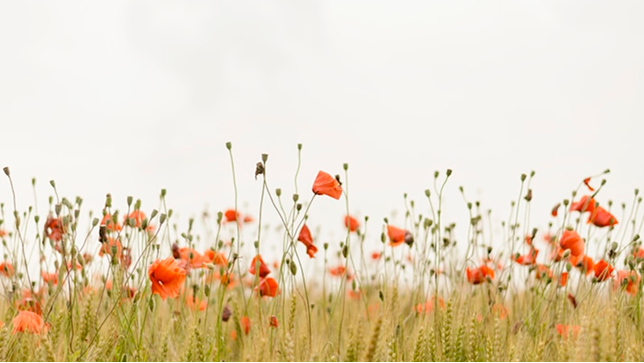

350
hectares de lavande
Un terroir d'exception
Nichées sur le plateau de Valensole, nos ruches bénéficient d'un microclimat unique où la lavande s'épanouit sous le soleil méditerranéen. Cette terre généreuse offre à nos abeilles un nectar d'une pureté incomparable.
Agriculture Biologique
Certifiée sans pesticides ni produits chimiques
Climat Privilégié
300 jours de soleil par an en moyenne
Apiculture Respectueuse
Pratiques durables pour le bien-être des abeilles
Terroir Unique
Sol calcaire propice à la lavande fine